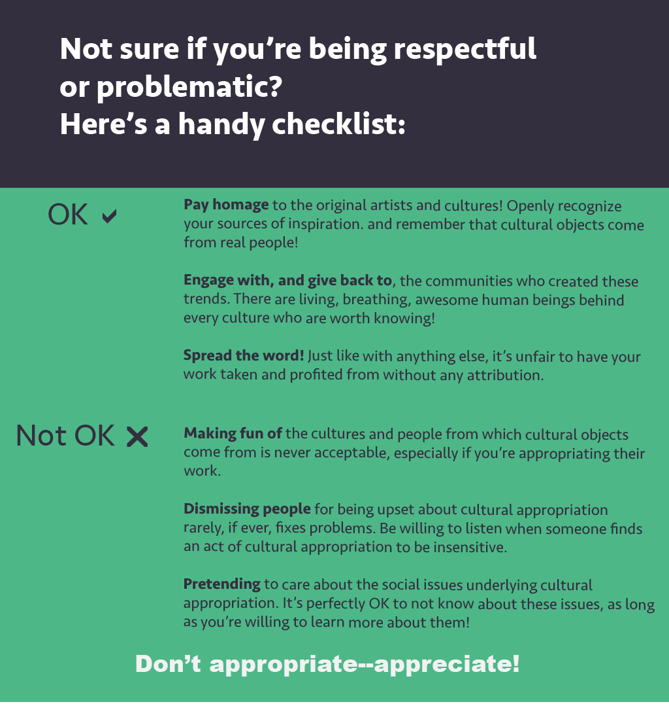
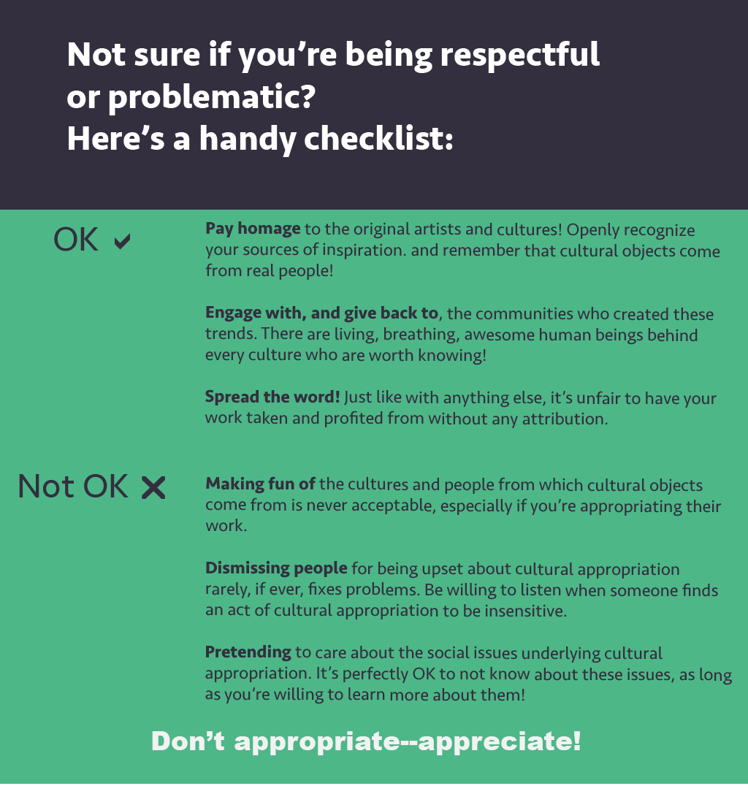

About the project
Cultural appropriation is a topic that is very important to me as a person of color and an activist. However, I read many discussions about the issue on social media that are based off of fundamental misunderstandings over its definition. While frustrating to see, confusion about what is cultural appropriation—as with many other social justice issues—evokes another issue that I can understand: cultural appropriation is a very complex topic, layered with countless levels of theory, history, and personal experience.
As a result, for the final project of my Intro to Media Studies class, I chose to create an infographic that clearly and concisely explains what is cultural appropriation and why people find it to be important. As my first major venture into both graphic design and social justice, I focused on communicating through both empathetic content and a coherent visual hierarchy.
Process
Thorough research was done to get a sense of what kinds of actions people identify as culturally appropriative, the impacts that these actions had (whether on individuals or society at large), and arguments from several sides of the debate on whether cultural appropriation is ethically permissible. The titles of the three infographic cards were chosen based off of which parts of the topic possibly generated the most confusion: what is cultural appropriation, what are some examples of it, and how to identify and respond to it.
One guiding principle for the design was to use highly visible items to summarize or emphasize important points. For instance, in the first card, I opted to use the equation "culture + appropration = cultural appropriation" to visually communicate a simple definition of the topic.
The infographic explains that, intentional or not, cultural appropriation is an offensive behavior. I chose to highlight two potential (and common) counter-arguments to these positions in the form of yellow text bubbles, deliberately contrasted with the main content in green or off-black. However, I do wish I had done a better job of visually indicating that I believe these positions are misinformed. By merely placing them at the end of the infographics, they don't do anything to support the main content; instead, they seem to directly contradict it with no clear explanation, which might confuse or communicate the opposite message to viewers.
The infographic was made using Adobe Illustrator. Before drawing the infographic, I watched a few introduction to graphic design courses on Lynda.
What's next?
Hopefully more where that came from!
I had a fun time creating this infographic! It gave me valuable insight into the minds of a designer, an educator, and an informed citizen. Knowing how to communicate social issues clearly and effectively is something that concerns me because of the ways in which emotions and preconceived notions can often obfuscate rational discussions of important social topics. (I try to view this project not from the lens of a disinterested outsider, but as an empathetic listener—this hopefully promotes productive discussions on social/cultural issues.)
I would, therefore, definitely be up to create more infographics clarifying important social issues in the future. Doing so would also serve as great opportunities to work on my visual/graphic design skills. This project taught me a lot about visual hierarchy and the importance of using contrast to order ideas.